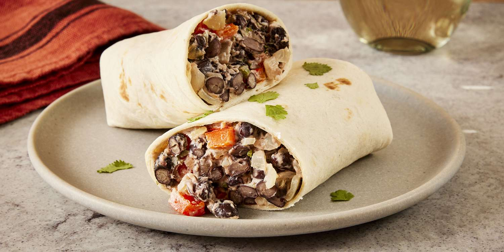

Lasagna

Description
A black bean burrito is a Mexican dish featuring a tortilla
filled with seasoned black beans, rice, and various toppings
like tomatoes, onions, lettuce, cheese, sour cream, and salsa.
It's a flavorful and customizable handheld meal enjoyed for
its rich taste and versatility, suitable for both vegetarian
and non-vegetarian preferences.
Ingredients
- 2 (10 inch) flour tortillas
- 2 tablespoons vegetable oil
- 1 small onion, chopped
- ½ red bell pepper, chopped
- 1 teaspoon minced garlic
- 1 teaspoon minced jalapeno peppers
- 1 (15 ounce) can black beans, rinsed and drained
- 3 ounces cream cheese, cubed
- ½ teaspoon salt
- 2 tablespoons chopped fresh cilantro
Steps
- Gather all ingredients. Preheat the oven to 350 degrees F (175 degrees C). Wrap tortillas in foil.
- Bake wrapped tortillas in the preheated oven until heated through, about 15 minutes.
- Meanwhile, heat oil in a 10-inch skillet over medium heat. Add onion, bell pepper, garlic, and jalapeño; cook and stir for 2 minutes.
- Stir in beans and cook until heated through, about 3 minutes. Stir in cream cheese and salt; cook, stirring occasionally, for 2 minutes. Stir in cilantro.
- Spoon filling in a line across the middle of each tortilla. Fold opposing edges of the tortilla to overlap the filling. Roll 1 of the opposing edges around the filling creating a burrito. Serve immediately.